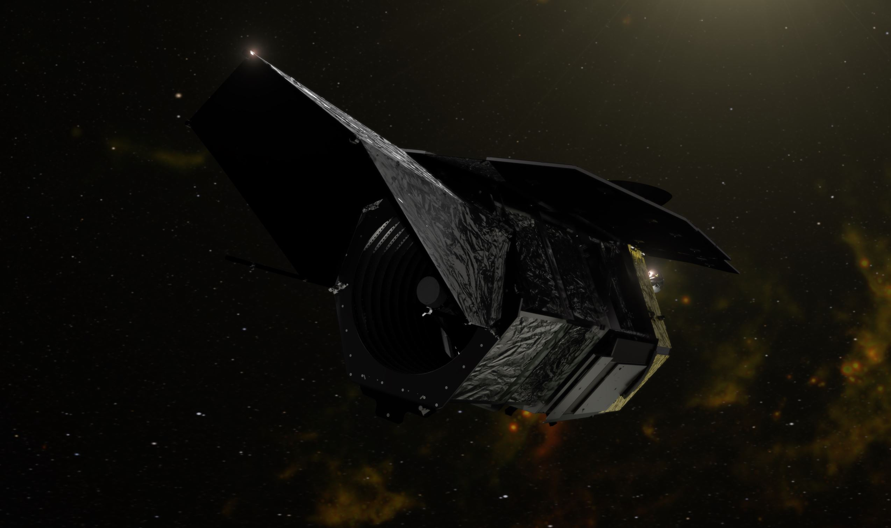
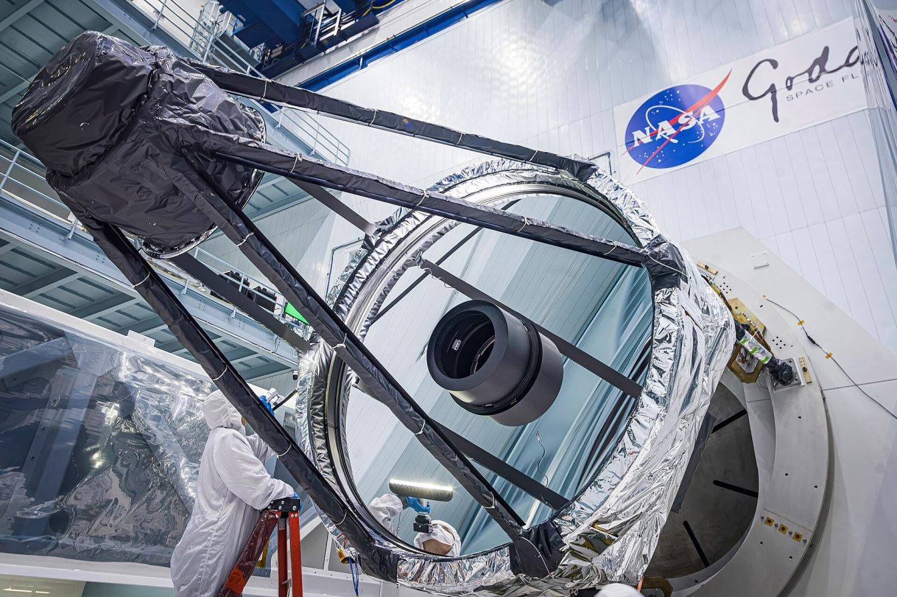
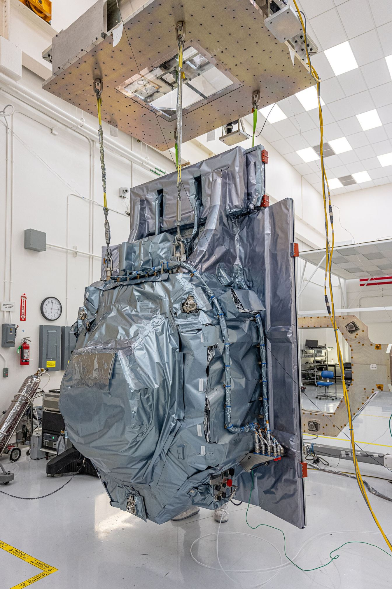
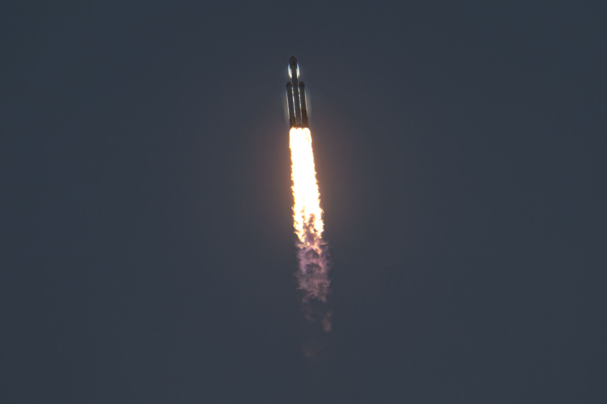

On 30 August 2026, a Falcon Heavy lifted off from Kennedy Space Center carrying NASA's newest great observatory: the Nancy Grace Roman Space Telescope. It is now flying to its observing post — and when it starts work in early 2027, it will photograph the sky in a way no space telescope ever has.
Where the name comes from
The telescope is named for Nancy Grace Roman (1925–2018) — the woman often called the Mother of Hubble. She joined NASA in February 1959 and became its first Chief of Astronomy in early 1960: the first woman in an executive position at the agency. At a time when many astronomers dismissed space telescopes, she fought for them — forming the steering group for the Large Space Telescope, campaigning publicly, and writing the congressional testimony that helped get it funded. That project became the Hubble Space Telescope. NASA renamed its next great observatory in her honour on 20 May 2020.

The telescope
| Specification | Value |
|---|---|
| Primary mirror | 2.4 m — the same diameter as Hubble's |
| Mirror origin | One of two surplus Hubble-class mirrors given to NASA by the National Reconnaissance Office in 2012 |
| Main camera | Wide Field Instrument: 300.8 megapixels, 0.28 square degrees per frame |
| Field of view | About 100× Hubble's imaging field — a hundred Hubbles in one picture |
| Wavelength range | 0.48–2.30 µm (visible + near-infrared) |
| Coronagraph | Technology demonstrator for direct exoplanet imaging, blocking starlight down to about one part per billion |
| Orbit | Sun–Earth L2 halo orbit — the same region as Webb |
| Mission | 5-year prime mission; launch mass 9,174 kg; 4.1 kW power |


What it will do
Roman has two great questions, and one spectacular extra:
- Dark energy — Roman will attack the mystery from three directions at once: thousands of Type Ia supernovae, weak gravitational lensing across hundreds of millions of galaxies, and baryon acoustic oscillations — three independent ways to measure how the universe's expansion is accelerating, in complementary surveys with ESA's Euclid.
- Exoplanets — by watching 200 million stars toward the centre of our galaxy for the tell-tale brightening of gravitational microlensing, Roman is expected to find more than 1,000 new planets — including rogue planets drifting alone in the dark, and worlds down to roughly Moon-to-Mars mass.
- Webb's scout — Roman's wide-field infrared survey will find the most interesting objects, and Webb will then study them in depth. The two telescopes were designed to work as a pair.
Latest news (October 2026)
The telescope finishes integration and testing.
Roman ships to Florida for launch preparations.
Falcon Heavy carries Roman to space from LC-39A. The telescope is encapsulated 24 August and flies perfectly.
Roman's coronagraph takes its first observation in space during commissioning.
The Wide Field Instrument is checked out and focused — wavefront error 63 nm, well inside the 90 nm requirement.
Roman is named one of TIME magazine's Best Inventions of 2026.
L2 arrival expected early December 2026; first science images early 2027.

A common confusion: Roman is a NASA astrophysics mission — launched on a commercial Falcon Heavy, studying dark energy and exoplanets from L2. The Artemis program is NASA's crewed lunar program, built around SLS and Orion. Same agency, two very different machines.